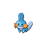

📖 英語版の図鑑説明
In water, Mudkip breathes using the gills on its cheeks. If it is faced with a tight situation in battle, this Pokémon will unleash its amazing power—it can crush rocks bigger than itself.
日本語訳
ミズゴロウは水中では頬のエラを使って呼吸します。戦闘で窮地に陥ると、このポケモンは驚異的な力を解き放ち、自分よりも大きな岩を砕くことができます。
📝 この図鑑文に出てくる英単語
| 英単語 | 意味 | 品詞 | レベル |
|---|---|---|---|
| breathes | 呼吸する | 動詞 | 高校 |
| gills | えら(複数形) | 名詞 | 大学 |
| cheeks | ほお(複数形) | 名詞 | 高校 |
| faced | 直面した | 動詞 | 高校 |
| tight | きつい | 形容詞 | 高校 |
| situation | 状況 | 名詞 | 高校 |
| unleash | 解き放つ | 動詞 | 大学 |
| crush | 押しつぶす | 動詞 | 高校 |
文法ポイント bigger than 〜 は比較級の文で「〜よりも…」という意味。2つのものを比べるときに使います。
if 〜 は「もし〜ならば」という条件を表す接続詞です。
💡 英語名「Mudkip」の由来
英語名「Mudkip」は、mud（どろ）、skip（スキップする）とmudskipper（ムツゴロウ）を組み合わせた名前と考えられている。フランス語の名前は「Gobou」で、gobie（ムツゴロウ）、gober（飲みこむ）、boue（どろ）から作られている。
出典 Bulbapedia
📊 ミズゴロウの種族値
HP50
こうげき70
ぼうぎょ50
とくこう50
とくぼう50
すばやさ40
合計 310
❓ よくある質問
- ミズゴロウの英語名は？
- ミズゴロウの英語名は「Mudkip」です。
- ミズゴロウの英語名「Mudkip」の由来は？
- 英語名「Mudkip」は、mud（どろ）、skip（スキップする）とmudskipper（ムツゴロウ）を組み合わせた名前と考えられている。フランス語の名前は「Gobou」で、gobie（ムツゴロウ）、gober（飲みこむ）、boue（どろ）から作られている。
- ミズゴロウは英語版の図鑑でどう説明されている？
- 「In water, Mudkip breathes using the gills on its cheeks. If it is faced with a tight situation in battle, this Pokémon will unleash its amazing power—it can crush rocks bigger than itself.」と書かれています。日本語にすると「ミズゴロウは水中では頬のエラを使って呼吸します。戦闘で窮地に陥ると、このポケモンは驚異的な力を解き放ち、自分よりも大きな岩を砕くことができます。」という意味です。
ミズゴロウは第3世代（ホウエン地方）のポケモンです。第3世代（ホウエン地方）の英語名一覧 →